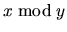
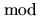

| Do the Untwist |
Cryptography deals with methods of secret communication that transform a message (the plaintext) into a disguised form (the ciphertext) so that no one seeing the ciphertext will be able to figure out the plaintext except the intended recipient. Transforming the plaintext to the ciphertext is encryption; transforming the ciphertext to the plaintext is decryption. Twisting is a simple encryption method that requires that the sender and recipient both agree on a secret key k, which is a positive integer.
The twisting method uses four arrays: plaintext and ciphertext
are arrays of characters, and plaincode and ciphercode are
arrays of integers. All arrays are of length n, where n is the
length of the message to be encrypted. Arrays are origin zero, so the
elements are numbered from 0 to n - 1. For this problem all
messages will contain only lowercase letters, the period, and the
underscore (representing a space).
The message to be encrypted is stored in plaintext. Given a key
k, the encryption method works as follows. First convert the
letters in plaintext to integer codes in plaincode according to
the following rule: `SPMamp_&' = 0, `a' = 1, `b' = 2, ..., `z' = 26,
and `.' = 27. Next, convert each code in plaincode to an
encrypted code in ciphercode according to the following formula: for all
i from 0 to n - 1,
(Here  is the positive remainder when x is divided by y. For example, 3  7 = 3, 22 8 = 6, and -1 28 = 27. You can use the C `%' operator or Pascal `mod' operator to compute this as long as you add y if the result is negative.)
Finally, convert the codes in ciphercode back to letters in ciphertext according to the rule listed above. The final twisted message is in ciphertext. Twisting the message ``cat" using the key 5 yields the following:
| Array | 0 | 1 | 2 |
| plaintext | 'c' | 'a' | 't' |
| plaincode | 3 | 1 | 20 |
| ciphercode | 3 | 19 | 27 |
| ciphertext | 'c' | 's' | '.' |
Your task is to write a program that can untwist messages,
i.e., convert the ciphertext back to the original
plaintext given the key k. For example, given the key 5 and
ciphertext `cs.', your program must output the plaintext `cat'.
Note: you can assume that untwisting a message always yields a unique result. (For those of you with some knowledge of basic number theory or abstract algebra, this will be the case provided that the greatest common divisor of the key k and length n is 1, which it will be for all test cases.)
5 cs. 101 thqqxw.lui.qswer 3 b_ylxmhzjsys.virpbkr 0
cat this_is_a_secret beware._dogs_barking